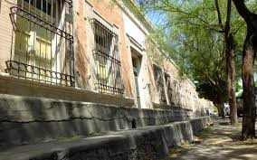

Barrio de las banquetas altas Gomez Palacio
El Barrio de las Banquetas Altas, ubicado en Gómez Palacio, Durango, es una de las zonas más emblemáticas y con gran valor histórico de la ciudad. Este barrio es conocido por sus características banquetas elevadas, diseñadas para mitigar los efectos de las inundaciones que antiguamente eran comunes en la región debido al río Nazas.
Su diseño arquitectónico incluye casas antiguas con estilos que reflejan la época colonial y las influencias culturales de los primeros años del desarrollo urbano de Gómez Palacio.
Datos historicos
Históricamente, el barrio fue hogar de importantes figuras de la región. Por ejemplo, la Casa de las Banquetas Altas, actualmente sede del Museo Xiximes, perteneció originalmente a los hermanos Ulpiano y Antonio Ruiz Lavín, y posteriormente a Eufrosino Jiménez, ligado a la histórica Hacienda de Santa Rosa de Lima. Esta conexión refleja la relevancia del barrio durante la expansión agrícola e industrial de la Comarca Lagunera, especialmente a partir del auge económico del siglo XX.
El desarrollo de este barrio se dio en el contexto de la consolidación de Gómez Palacio como una ciudad clave en la Comarca Lagunera, destacándose por su importancia agrícola e industrial. Durante el auge económico de principios del siglo XX, la ciudad experimentó una notable expansión, y barrios como este reflejaban tanto el crecimiento como las soluciones prácticas a los desafíos ambientales de la época.
Las calles empedradas y el diseño de las banquetas son un distintivo que aporta un carácter único al barrio. Estas características urbanas, junto con las antiguas casas, lo convierten en un sitio representativo del legado de la ciudad. Este barrio, junto con otros lugares históricos como la Plaza de Armas y el Templo de Nuestra Señora de Guadalupe, forma parte del recorrido cultural que resalta la rica historia de Gómez Palacio.
En el presente, el barrio es valorado no solo por su historia sino también por ser un símbolo de la capacidad de adaptación de la ciudad frente a los retos ambientales y urbanos de su tiempo.